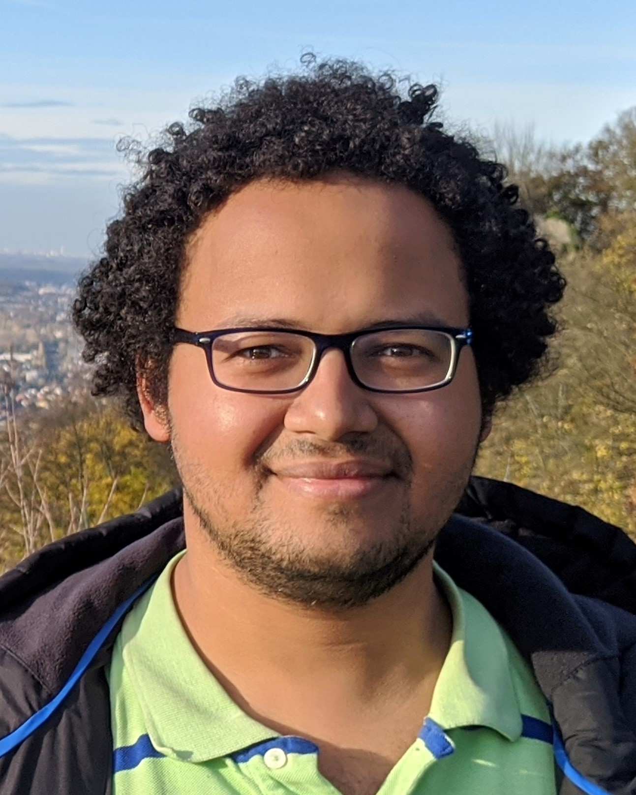

Yahya Essa (Ezzeldin)
About me
I am Staff Engineer at MediaTek USA Inc. working on developing advanced algorithms for 5G and future generation modems. Before joining MediaTek, I was a Postdoctoral Researcher at the Ming Hsieh Department of Electrical and Computer Engineering at University of Southern California (USC) working with Prof. Salman Avestimehr.I received my Ph.D. degree in Electrical and Computer Engineering from the University of California Los Angeles (UCLA) in 2020; I was working with Prof. Christina Fragouli as a member of the Laboratory of Algorithmic Research on Network Information flow.
Before joining UCLA, I received my Bachelor's and Masters degrees from Alexandria Univeristy in Electronics and Communications Engineering in 2011 and 2014,respectively where I was supervised by Prof. Karim Seddik.
I was awarded the prestigious 2020-2021 Distinguished Ph.D. Dissertation Award in Signals and Systems from the Electrical and Computer Engineering Department at UCLA. I was awarded the 2019-2020 Dissertation Year Fellowship (DYF) at UCLA.
Research Interests
My research interests are in information theory, federated learning and distributed computing.Contacts
| Postal Address | University of Southern California
Ming Hsieh Department of Electrical and Computer Engineering Los Angeles, CA 90089 |
| Email Addresses: | yessa at usc dot edu; yezzeldin at ucla dot edu |

News:
- Nov 2022:
Our paper addressing demographic fairness in training federated learning models has been accepted to appeat at AAAI 2023. You can read a pre-print of our work here. - Oct 2022:
Our paper on Approximate Capacity of half-duplex line Networks has been accepted in IEEE Transactions on Information Theory. - Sept 2022:
Check out our new paper on the privacy guarantees of federated learning using secure aggregation. This paper was recently accepted to appear at PoPETS 2023.